So You’re Editor-in-Chief. Now What?
Responsibilities:
Tuesday and Thursday:
Review content, post Editors’ Choice and News selections.
Wednesday:
Manage Editors-at-Large:
- Send instructional email
- Send follow-up email
- Tweet thank you message
- Complete checklist
Instructions:
Tuesdays and Thursdays: Choosing and Publishing Content
Wednesdays: Managing the Editors-at-Large
Tuesdays and Thursdays: Choosing and Publishing Content
Under Review: Selecting from Nominated Content
All of the content that has been nominated by the Editors-at-Large or through the Bookmarklet are found in “Under Review.” As Editor-in-Chief, you are welcome to start your search for the week’s items here, relying on the Editors-at-Large to filter the more general stream of information for you. As Editor, you should move to draft only those piece that you plan to publish, though should you change your mind after drafting, a simple “trashing” of the piece removes all evidence. After selecting an item for publication, Archive it to help minimize duplicate posts.
- Select “Under Review” from the PressForward plugin menu in the left toolbar:
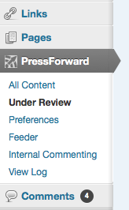
- Nominated items can be sorted by the date the item was posted or by date nominated using the buttons at the top left corner of the page. You can also show archived items or hide them.
- Under each item, there is an icon bar similar to that displayed in “All Content,” with two variations:
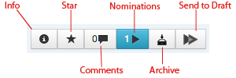
- The double arrow (on the far right) sends the full content and metadata of the post into the regular WordPress dashboard as a draft post. The button will turn Green when the item is converted to a post. These posts will remain visible until archived.
- The icon to the left of the double arrow enables you to Archive the piece, which removes it from view to all Editors.
Publishing Content to DHNow
Once your items are drafted and exist as WordPress posts, they should be mostly ready for publication. There are few adjustments that you will need to make to ensure consistent formatting of the pieces.
News Items:
- All content that comes in through the PressForward plugin should have metadata associated with it displayed below the post:
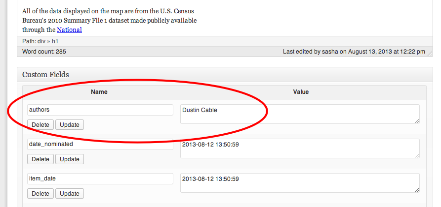
- For News Items: For these items, we list the author as “The Editors.” To do this, add another custom field of “guest-author” with the content of “the Editors.” This allows us to keep both the author metadata while having a consistent display for news items:
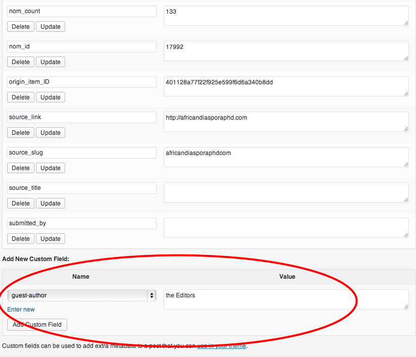
Formatting the main text field:
- The PressForward plugin should take care of most of the stripping of the html and css from the original blog post, it is important to confirm that no additional styling is still surrounding the text. This is easy to fix in the “Text” view.
- In addition, starting with the Fall term, we will be self-hosting all of the content on DHNow, so the length of pieces is now critical. Please keep the Editors’ Choice articles to the most salient or interesting 1-2 paragraphs (150-250 words) and News items to 1-3 sentences (50-100 words).
- Each piece should end with a “Read Full Post Here” as a link to the original content.
- We use Categories to to designate where content displays on digitalhumanitiesnow.org. For News Items, we add a second category based on the type of news item we are posting. Make sure to check both “News” and the secondary category.
- We signal the categories of the pieces in the titles. Add “Editors’ Choice:” to the beginning of all EC items and the type of news (ie: “CFParticipation:”, or “Job:”) to the beginning of all News items.
- We use “scheduling” to pace the publication of posts throughout the day on Tuesdays and Thursdays. Publish your first News item 20 minutes after the last Editors’ Choice item, with 20 min. intervals between each News item after the first.
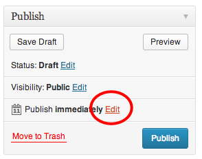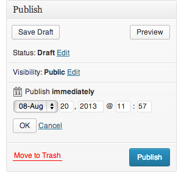
Editors’ Choice Posts:
The format for the Editors’ Choice posts has changed slightly with the redesign. You can start out by performing the same set of steps as you would for a News item, then add the following:
- Change the post format to “Editors’ Choice:”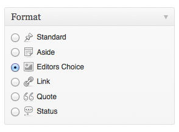
- When you change the post title to include “Editors’ Choice,” make sure it is no longer than three lines. Before posting, preview the post to check your formatting.
- Please keep Editors’ Choice articles to the most salient or interesting 1-2 paragraphs (150-250 words). End the post with a “Read Full Post Here” as a link to the original content and remove any styling around the text.
Custom Fields: Authors and Editors-at-Large
- In the authors field, make sure that the author of the original post is assigned as author on the EC post. The content in the “Author” field should be pre-populated, but it is a good idea to confirm that the information in this field is correct, includes every author, and is well-formatted.
- If you published the Editors’ Choice directly via the “Press This” bookmarklet, or created a new post independently from the Plugin, you can add the author’s name using the “guest-author” custom field.
- Add custom fields for Editors-at-Large and the Editor-in-Chief for the week. Select from the dropdown menu, then enter your name under EiC and copy the names of that week’s editors from the E@L spreadsheet. The list of names should be separated by commas and a last “and” before the last name: 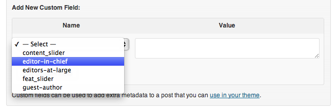
- Choose “Editors’ Choice” as the category. 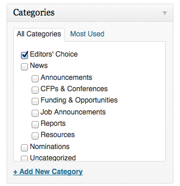
- Scroll down to the bottom of the page and check “Add post to Smooth Slider:” 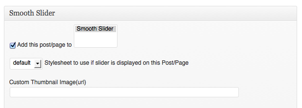
Setting the Featured Image
- For Editors’ Choice pieces, we also include a featured image. This is usually an image taken from the piece itself. To add a featured image that you’ve pulled from the original post and added to the media library, select “Set Featured Image” on the right side of the page.
- When selecting images not in the stock folder, remember that they must be landscape-style to work in the slider/EC archive, and that larger images are better.
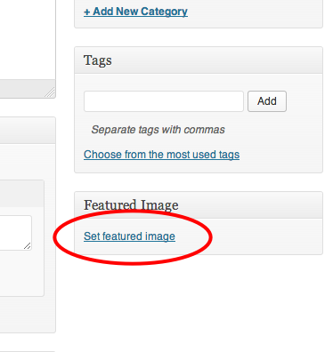
- *DO NOT ADD THE IMAGES TO THE SLIDER*
- However, we also have a set of stock images that can be used if needed. If you would like to go directly to the stock images, select “Add Media” at the top of the post, then select “Media-Tags” from the sidebar.
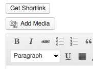
- All stock images are under the “CC-By” tag. Select an image, then click “Show.” At the bottom of this window, you can set this image as a featured image:
- The first EC items should be published at 12 and 12:30. Pace the news items at either 20 or 30 minute intervals.
Checklists: EC and News Items
News:
- Change author to “the Editors”
- Format the text field (2-3 sentences, no styling)
- Add categories
- Change the title
- Schedule
ECs:
- Change post format to EC
- Change the title
- Format the text field (1-2 paragraphs, no styling)
- Custom fields:
- Check post author
- Add Eds@Large, Ed-in-Chief fields
- Add category
- Add post to slider
- Set featured image
- Schedule
Part 2: Managing the Editors-at-Large
Editor-at-Large Spreadsheets
We currently manage our editors-at-large using a couple of spreadsheets in a shared folder on Google Drive. The primary spreadsheet you will be using as the weekly editor is Editors at Large. You must be signed on under dhnow@pressforward.org in order to access and edit this spreadsheet.
The first tab at the bottom of the spreadsheet is the weekly checklist. Here, you will enter your name as the Editor-in-Chief for the week, then use the other columns to record the dates you finish the rest of the EiC requirements.
Use the second tab, “Responses,” to complete the following three tasks.
(The third tab is what displays on the website for editors-at-large to confirm their weeks. Ignore this tab.)
Tasks:
There are three main tasks that you need to complete as Editor.
- Send the follow up email to the editors-at-large from the previous week.
- Tweet a “thank-you” that mentions the current week's editors.
- Send the instructional email to the editors-at-large for the upcoming week.
The text for all of these emails is pre-set and controlled by the spreadsheet. You should skim the text to confirm that you’re sending the correct text to the right set of editors for the right week.
Sending Emails Using the Editor at Large Spreadsheet
Selecting Weekly Editors:
The weekly emails will be sent from the Editor at Large spreadsheet. Use the filtering option (do not sort) to select the editors for the weeks you need. Clicking on the funnel icon in the toolbar will give you the option to filter columns:
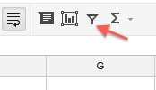
Click on the blue arrow at the top of the column to open the filter menu, then uncheck the (Blanks) option.
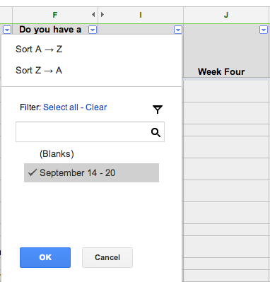
This will give you a sheet that only shows the information for the editors-at-large for the selected week.
Quick Reference for Sending Emails/Tweeting:
Follow-up email → Week before
Tweet → Current week
Instructional email → Next week
1. Instructional Email:
Make sure that you are logged in as dhnow@pressforward.org
First, filter (do not sort) the column for the week after your week as editor. The sheet should show the information associated with that week.
To send the email, look at the top of the spreadsheet and find the menu item for Instructional Email:
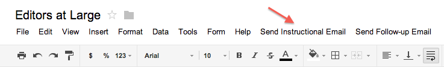
Click, then click again on the dropdown option:
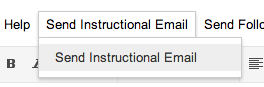
This will open a pop-up window:
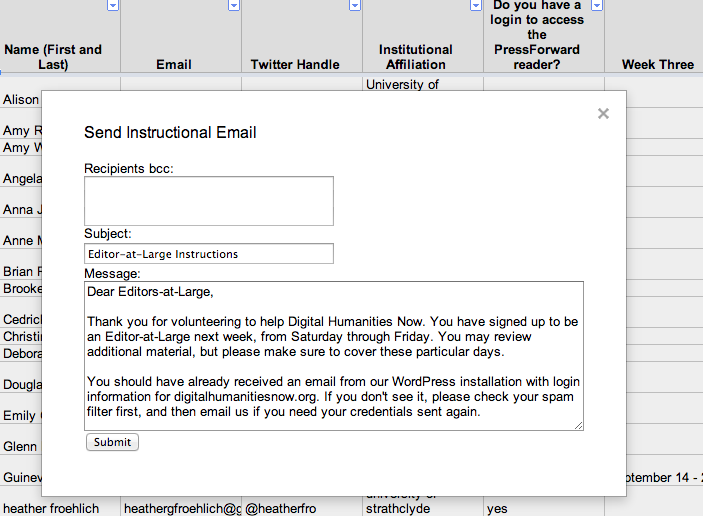
Copy/paste the email addresses from your filtered sheet into the “Recipients bcc:” box and submit.
You should get an “email sent” confirmation when you click submit.
2. Follow-Up Email
Click on the funnel to turn off your filter. All rows should reappear. Turn the filter back on and filter the column for the week BEFORE your week.
Repeat the email process, but choose Send Follow-Up Email from the top menu:
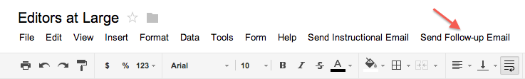
Copy/paste the email addresses from your newly re-filtered sheet into the “Recipients bcc:” box and submit.
3. Tweeting:
Login to Twitter as “dhnow” and copy/paste the twitter handles of your week’s editors. Add some kind of thank you message and tweet. If some of your editors did not provide a twitter handle, include their name in the tweet.
Checklist:
Once you’ve sent your emails and your twitter message, add the date to the Checklist sheet.